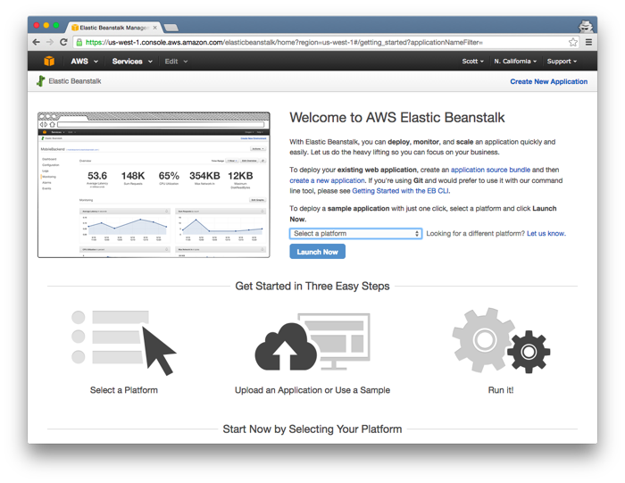
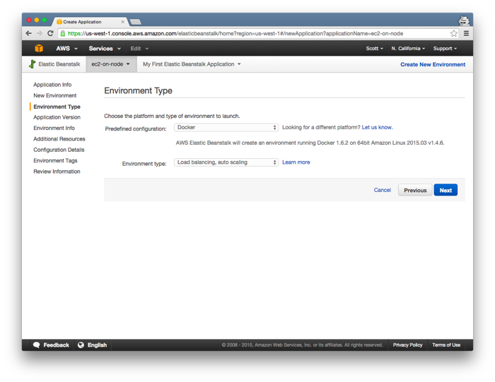
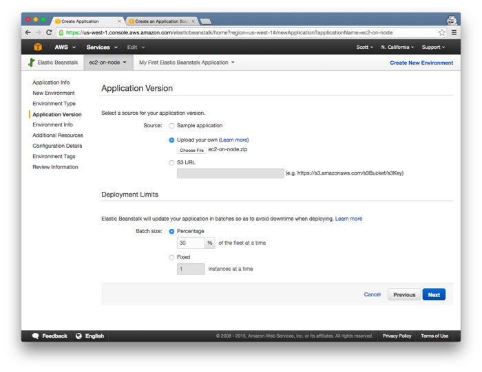
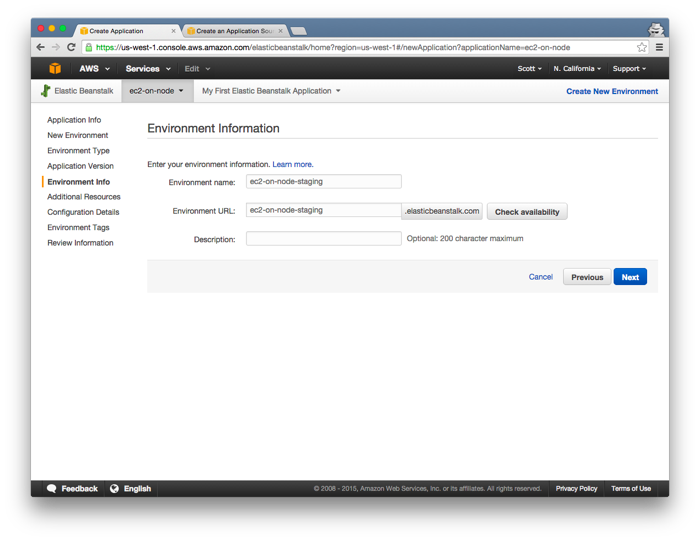
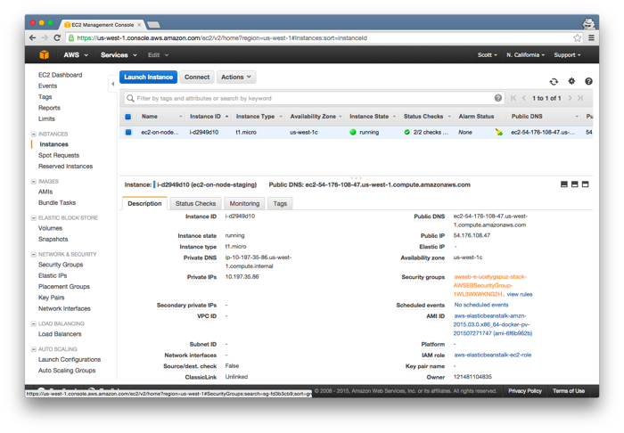
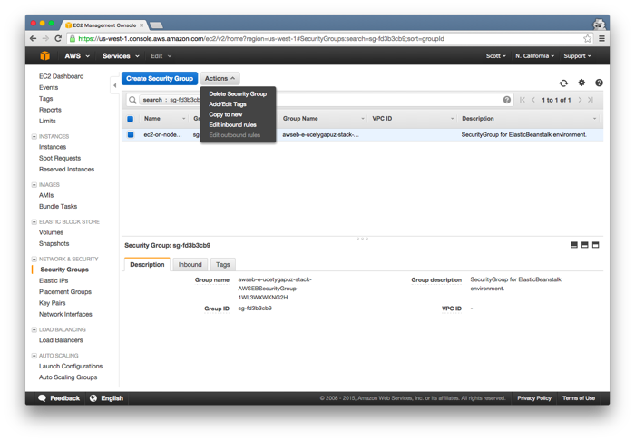
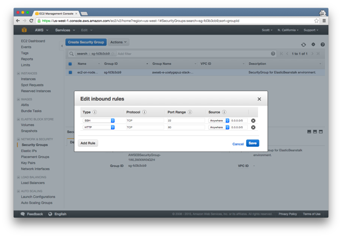

Node.js is cool. Amazon EC2 is cool. In this tutorial, I show you how to deploy NodeJS to Amazon EC2 using Amazon Elastic Beanstalk and Docker.
Begin by cloning ec2-on-node.
git clone git@github.com:motdotla/ec2-on-node.git
Next visit Amazon Elastic Beanstalk. You will need to already have an Amazon Web Services account. You can signup for free at here.
Click Create New Application at the top right.
Name your application `ec2-on-node` and click Next.
Click the `Create Web Server` button.

Choose the `Create an IAM Role and instance profile` on the popup modal.

On the next screen choose `Docker` and `Load balancing, auto scaling`. Click Next.
Upload your application. Click `Choose File` and then find the `ec2-on-node.zip` file. It is inside the repository you cloned at the beginning of this tutorial. Leave the other settings the same and click Next.
On the next screen choose an environment name and environment url.
On the next screen keep the default settings and click Next.

On the next screen keep the default settings but also add `/` to the Application Health Check URL setting. Click Next.

Click Next through the Environment Tags section. Lastly, on the Review page, click `Launch`.

It will take about 5 minutes to finish deployment. Select your server. In the Description tab, click the generated Security Group.
Click the 'Actions' button and then click 'Edit inbound rules'.
On the Edit inbound rules modal, make sure HTTP Port 80 is enabled and make sure the source for it is set to 'Anywhere 0.0.0.0/0'.
Lastly, visit the IP address of your ec2-on-node server. For example, http://54.82.39.111/.
Nice job! You just deployed your very first NodeJS application to Amazon EC2.